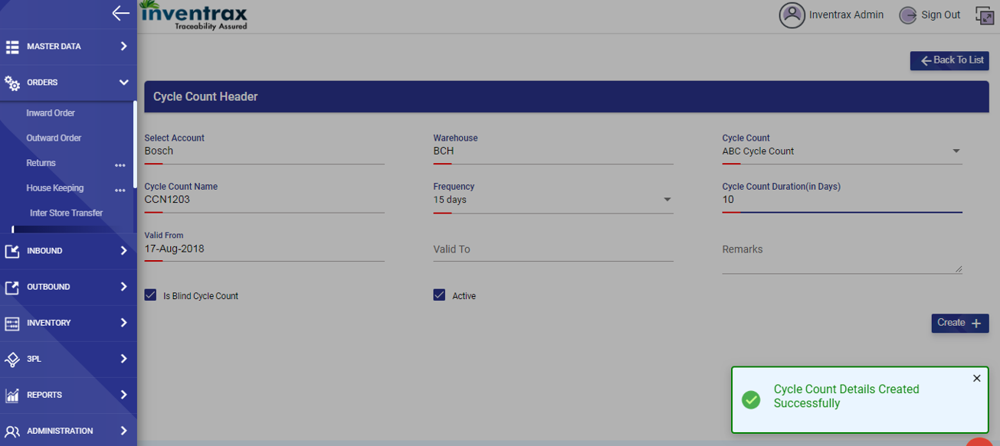

-
Cycle Count
- start with the Cycle count, go to Orders
 Inventory Cycle Count List.
Inventory Cycle Count List. - The below screen is displayed.
- Click on “Add +” button.
- Select the mandatory Account, Warehouse, Cycle Count, Cycle Count Name, Frequency and Cycle Count Duration and Valid From.
- User can configure Cycle Counts for logged in account only.
- All the configured Cycle Counts for respective Account will display in Cycle count Configuration list.
- Cycle Count Name should be unique.
- All mapped WH’s to respective account should display in Warehouse dropdown. User can select a WH from the dropdown list.
- ‘Is Blind Cycle Count’ checkbox should be auto checked on Cycle Count details form. If Cycle Count is configured as Blind, ‘Available Qty.’ shouldn’t display on capture screen in CC transaction.
- User can uncheck ‘Is Blind Cycle Count’ checkbox depending on requirement. If Cycle Count is configured as non-blind, Available Qty. should display on capture screen in CC transaction.
- After configuring a new cycle count, below grid “Entity Configuration” should get enabled.
- Cycle Count Duration is more than Frequency configured for that CC error message “Cycle Count Duration Should Be Less Than Or Equal To Frequency.” Should come. 
- An alert message is displayed as shown above.
- This data is displayed in the list as shown below.
- Now click on edit icon in the action column and below screen is displayed.
- Click on “Add +” button and the below shown popup is displayed.
- Give the mandatory fields and click on “Create” button. An alert message is generated as shown below.
- User can configure one or more entities for a cycle count.
-
Entity configuration should be unique.
Entity configuration should be unique.
- Entity configuration should be unique.
- If at least one transaction/cycle is initiated (in CC Transaction module) for a configured cycle count, then user can edit only the ‘Valid To’ date and ‘Frequency’ of the respective Cycle Count.
- If at least one transaction/cycle is completed, then user can edit only the ‘Valid To’ date.
- Cycle Count Duration Should Be Less Than or Equal To Frequency.
-
5) Validation at the time of changing Valid To: Valid to should not be less than the maximum Planned End Date of any cycle counts in the series as per the formula:
PED = PSD of this Series + (Duration -1) Days
- Once all transactions for cycle count is marked completed, then no more changes are permitted for respective CC.
-
User can configure one or more entities for a cycle count.
Below are the cases:
- Case1: If user configures ‘Zone’ as an entity, on capture screen locations belong to that zone under WH should come only. And materials belongs to account should come.
- Case2: If user configures ‘Material’ as an entity, on capture screen locations belong to WH should come and configured material should come.
- Case3: If user configures ‘Tenant’ as an entity, on capture screen locations belong to WH should come and material should come based on Tenant.
- Case4: If user configures ‘Supplier’ as an entity, on capture screen locations belong to WH should come and materials should come based on Supplier.
- Now click on Cycle Count Capture. The below list is displayed.
- Now click on “Initiate” button.
- Below shown alert message is displayed.
- Now in the action column two buttons are displayed as shown below.
- Now click on “Capture” button, and the below shown popup is displayed.
- Give the mandatory (Location, material and Qty.) fields and save the data.
- The confirmation popup is displayed confirming the release of dock as shown below.
- Once confirmed the “Capture” button changes to “Captured” in the action column. Screen shown below.
- Now click on “Complete” button to finish the Cycle Count process.
-
Now the completed cycle count’s planned start and end dates are shown in the above displayed screen.
Business Rules for CC Capture:
- Calculations of PSD and PED should be computed as per the below formulas:
-
CC Transaction List:
- Once a Cycle Count is configured for an Account(logged In), it will display on Cycle Count Transaction page.
- Cycle Counts of the logged in account should display only.
- Beside Search, a "Show All" Checkbox is displayed, to show completed CC also in CC transaction list.
- Display order is descending Order for list elements when “Show All” checkbox is not checked and here only CC’s with status Planned and initiated should display.
- Once an entity is configured to that cycle count, then only user will be able to initiate it, else initiate button will not come on CC transaction page.
- If ‘Valid From’ is future date and entity is configured for that CC, initiate button won’t come before ‘Valid From’ date for that CC on CC transaction page.
- By clicking on initiate button, user should be able to initiate cycle count.
- After initiating cycle count, status should be changed to ‘Initiated’ from Planned.
-
Edit CC :
- User can edit a cycle count, if status for CC is ‘Planned’. Once user has initiated the CC, user shouldn’t be able to edit CC.
- PED should be an auto computed label.
-
Cycle Count Capture:
- Case1: If user configures ‘Zone’ as an entity, on capture screen locations belong to that zone under WH should come only. And materials belongs to account should come.
- Case2: If user configures ‘Material’ as an entity, on capture screen locations belong to WH should come and configured material should come.
- Case3: If user configures ‘Tenant’ as an entity, on capture screen locations belong to WH should come and material should come based on Tenant.
- Case4: If user configures ‘Supplier’ as an entity, on capture screen locations belong to WH should come and materials should come based on Supplier.
- If no Zone is configured then all locations under configured WH should display.
- Location, Material, quantity are mandatory on Capture screen.
- Once capturing of data is done and user saves the entered data, button should changed to ‘Captured’ from ‘capture’.
- After capturing data, when user clicks on Complete button, it displays message that “All locations released and transaction completed successfully” and status should be ‘Completed’ and View icon start coming for that transaction. User can view transaction by clicking on that view icon.
- Beside Search, a "Show All" Checkbox is displayed, to show completed CC also in CC transaction list.
- If user checks "Show All" Checkbox, all transactions(Planned, Initiated and Completed) will display in ascending Order on CC transaction list.
- If “Show All” checkbox is unchecked, CC transaction list will display only CC’s with status Planned and initiated should display in descending order.
- Once an entity is configured to that cycle count, then only user will be able to initiate it, else initiate button will not come on CC transaction page.
- User shouldn’t be able to initiate cycle count before the Planned Start date.
- User should be able to edit PSD to any date between the CC Configuration PSD & PED.
- If Cycle Count is configured as Blind, then Available Quantity shouldn’t display, for non-blind cycle counts Available Quantity should display on capture screen.
- Once user clicks on save button, application will ask for releasing locations, if user clicks on Yes button, data entered should be saved and locations should be released successfully.
- If user will add same material on same location in a single transaction, it will be display in one single record.
- Once user clicks on save button, application will ask for releasing locations, if user clicks on No button, data entered should be saved but locations shouldn’t be released.
- After completing one transaction, status for transaction should be ‘Completed’ and entry for next transaction/sequence should come in transaction list.
- Once all transactions are completed for respective CC(as per Valid From and Valid To date in CC configuration), entry for next transaction/sequence should not come in transaction list.
For First CC in Series:
PSD = Valid From of Config Table
PED = PSD of Series + (Duration -1) Days
For Nth CC in series:
PSD = AED of (N-1)th Series + (Frequency) Days
PED = PSD of this Series + (Duration -1) Days
Hand Held Process for CC Transaction
-
Capturing is of two types in HHD -
- Manual mode – Capturing quantity is user entry
- Auto mode – Capturing quantity is always 1 when item is scanned
- Capturing can happen with respect to Location.
- Scanned containers and locations must be under the defined warehouse of the User
- Scanned items must belong to respective account based upon entities configured.
- Location, container, item and quantity are mandatory while capturing data through HHD.
Cycle Count Report
- Once a Cycle Count is marked as Completed, user can see CC report for that sequence/transaction by clicking on view icon in CC Transaction page for that sequence.
- User can navigate to REPORTS Audit Cycle Count Report
- Here user can see CC report for all the CC conducted till date.
- By default data for all CC’s will display.
- User can also filter CC, as per their requirements.
-
On CC Report page, three filters are displayed:-
A. Cycle Count
B. Cycle Count Name
C. Sequence No.
User can select filters - Cycle Count, Cycle count Name and sequence no and filter cc report data.
- start with the Cycle count, go to Orders